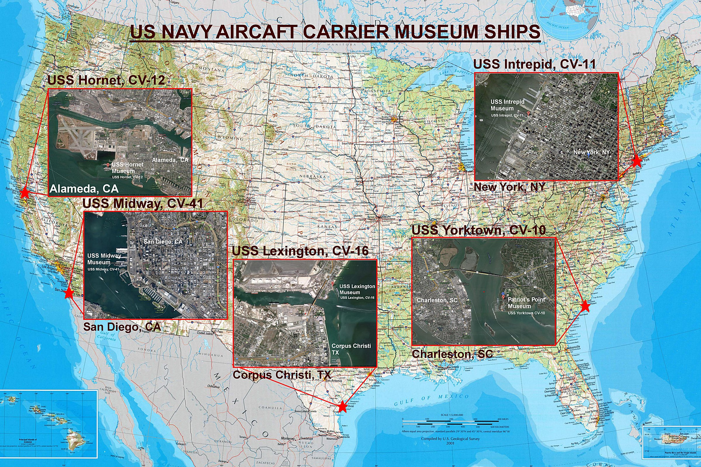
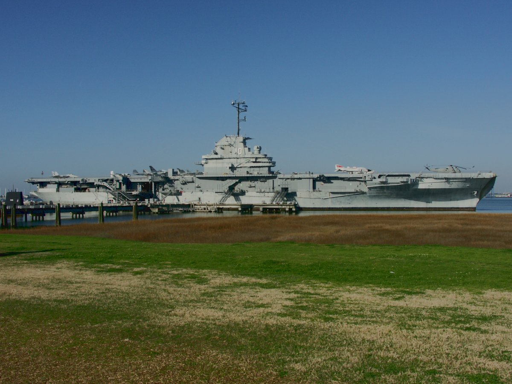
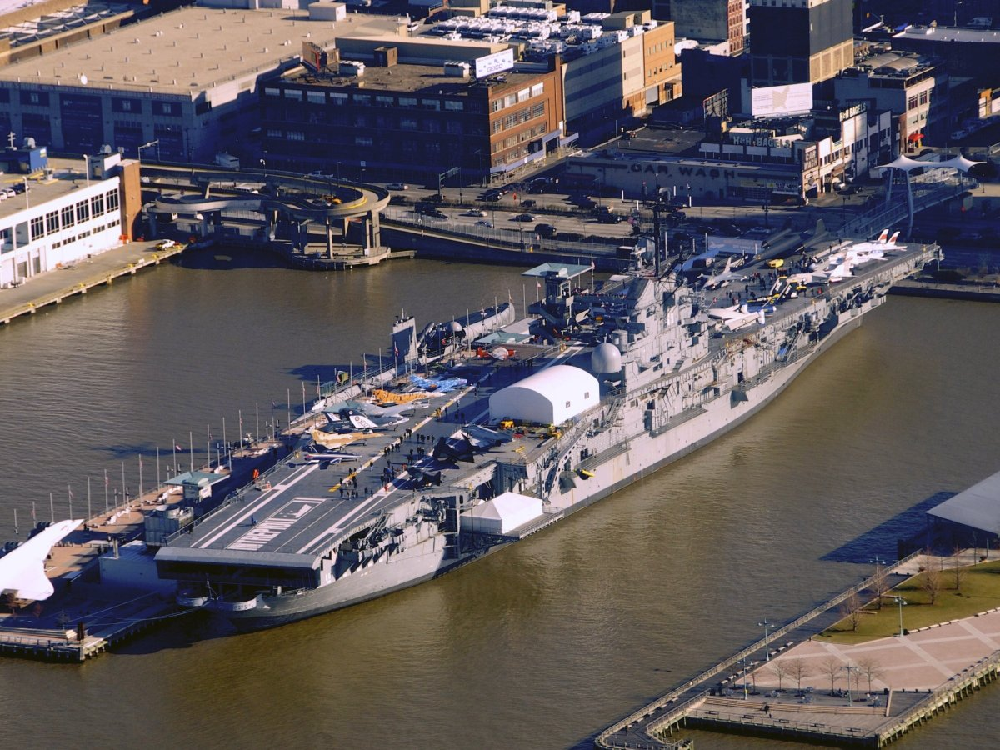
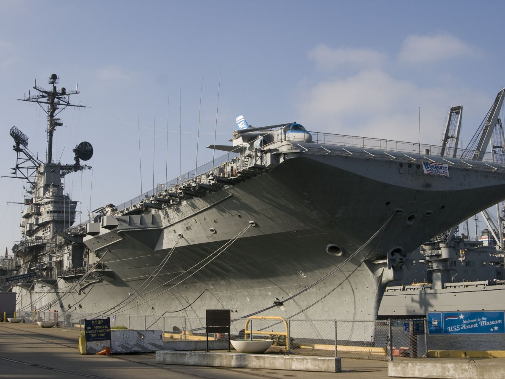
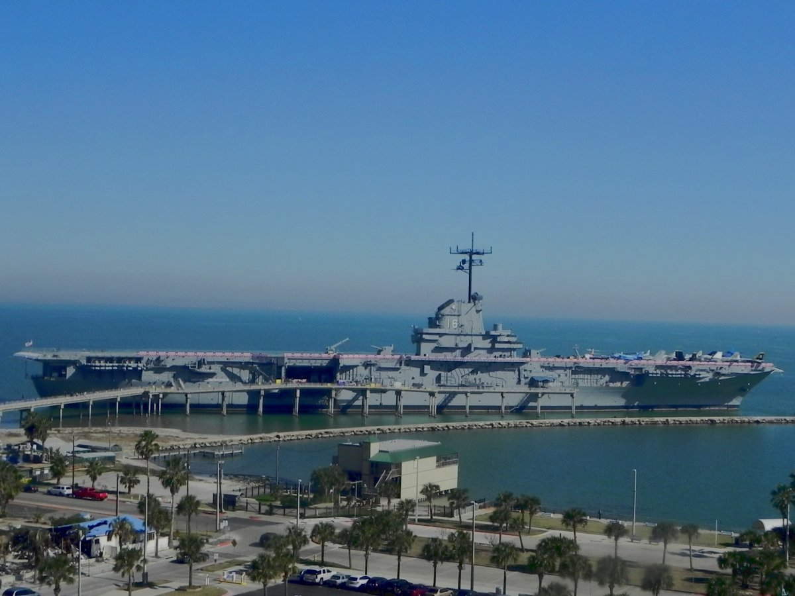
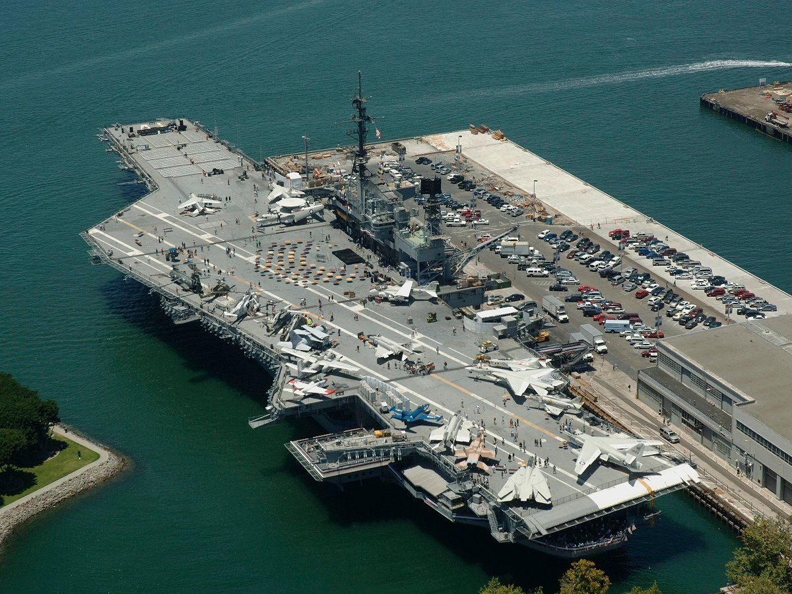
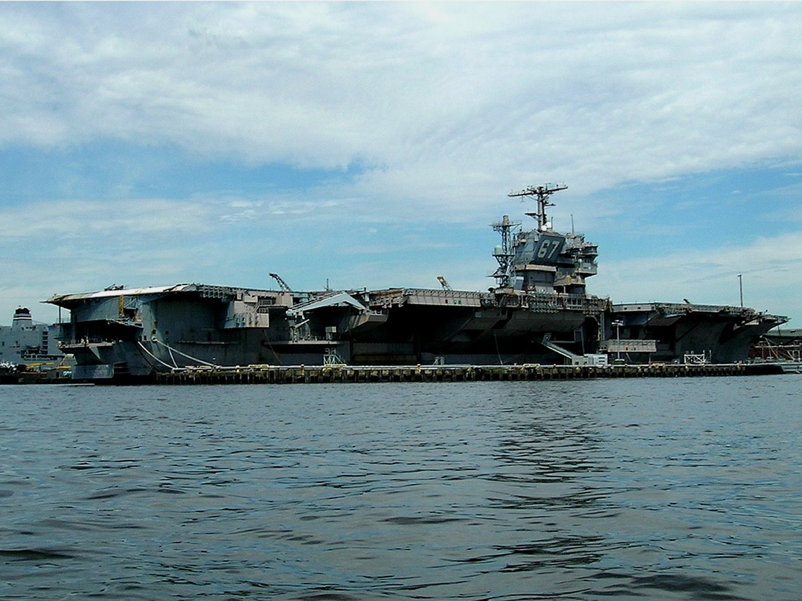

|
 |
 |
|
 (Click map for a high resolution image) Currently (July 2013) there are five US Navy Aircraft Carrier museums. Four are of Essex class carriers commissioned during World War II which underwent the SBC-125 refit in the 1950s to modernize them. All were commissioned in 1943 & served into modern times. The last, the USS Lexington, was decommissioned in 1991 after 48 years service. The other is the USS Midway, namesake of a larger class carrier built at the end of the war. She underwent two major refits, in the 1950s & in 1970 greatly enlarging her flight deck for modern aircraft. She was commissioned in 1945 & decommissioned in 1992 after 47 years service.
 USS YORKTOWN, CV-10, MUSEUM, CHARLESTON, SC
Name: USS Yorktown
 USS INTREPID, CV-11, MUSEUM, NEW YORK, NY
Name: USS Intrepid
 USS HORNET, CV-12, MUSEUM, ALAMEDA, CA
Name: USS Hornet
 USS LEXINGTON, CV-16, MUSEUM, CORPUS CHRISTI, TX
Name: USS Lexington
 USS MIDWAY, CV-41, MUSEUM, SAN DIEGO, CA
Name: USS Midway
Currently, none of the more modern "super carriers," meaning none of the Forrestal Class, Kitty Hawk Class, or later aircraft carriers, have been saved and set aside as museums. However, there is an active effort underway to get the John F. Kennedy, CV-67, set up as an aicraft carrier museum in the New England area, She was a "super carrier," built to a modified Kitty Hawk standard, and was the last conventionally powered (meaning non-nulcear) aircraft carrier the United States built.
 USS JOHN F. KENNEDY, CV-67, (Proposed - Rhode Island)
Name: USS John F. Kennedy
WORLD-WIDE AIRCRAFT CARRIERS
|
FINE ALL-AMERICAN, LIBERTY ORIENTED BOOKS AUTHORED BY JEFF HEAD
 Dragon's Fury - World War Against America and the West: Following great success in the War on Terror, politicians and analysts alike thought that future global conflict was impossible...but they were wrong. Journey into a possible future where Islamic terrorists sharpen their horrific skills & ally with Red China. In such a future, can the U.S. & western civilization survive? |
 The Stand at Klamatjh Falls: How rural western farmers and their supporters stood up to entrenched environmentalism, activist judges, and agencies of the Federal Government in southwestern Oregon...and prevailed. |
BACK TO JEFFHEAD.COM
Copyright © 2013 by Jeff Head, All Rights Reserved
Free hit counter